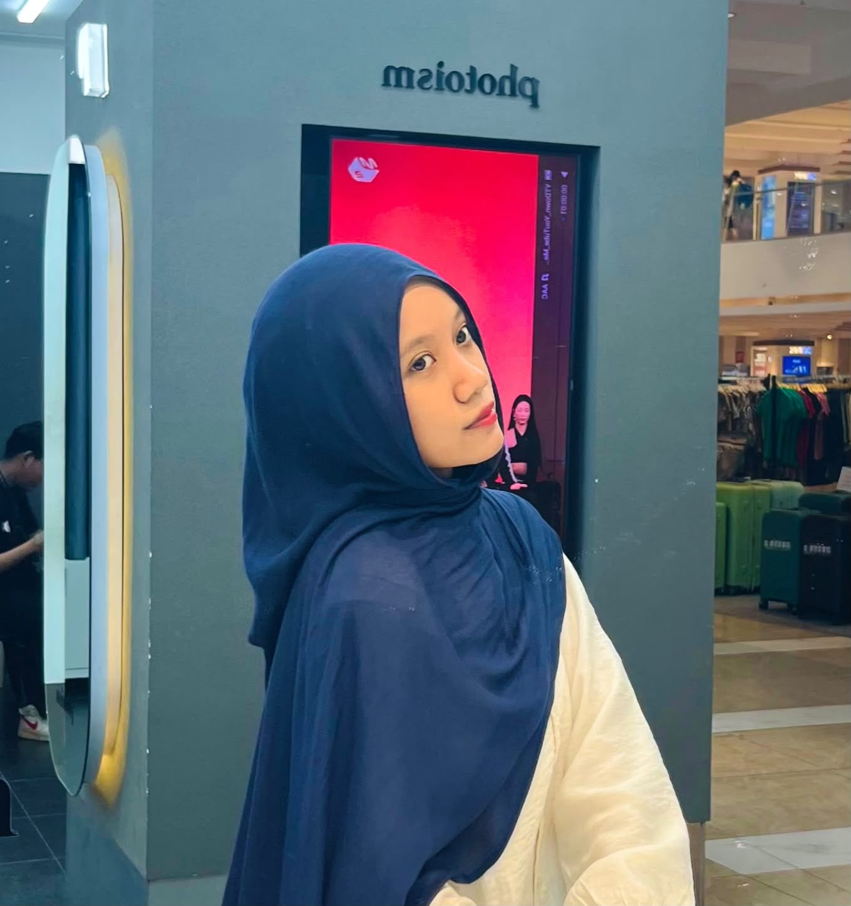
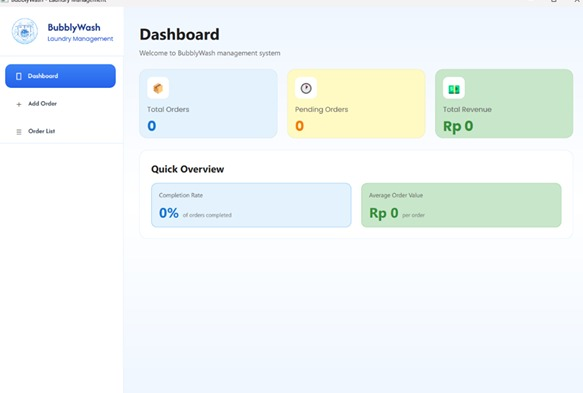
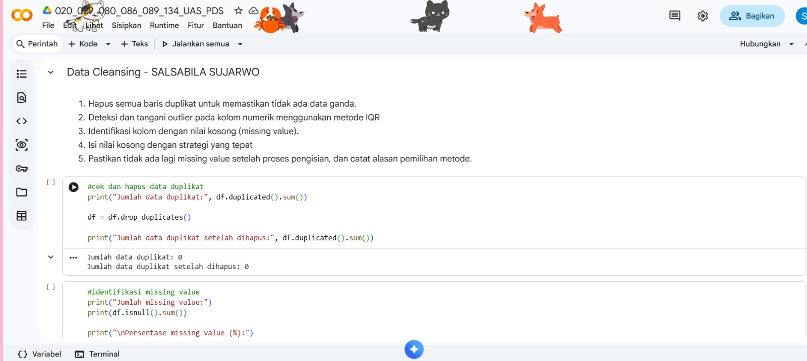
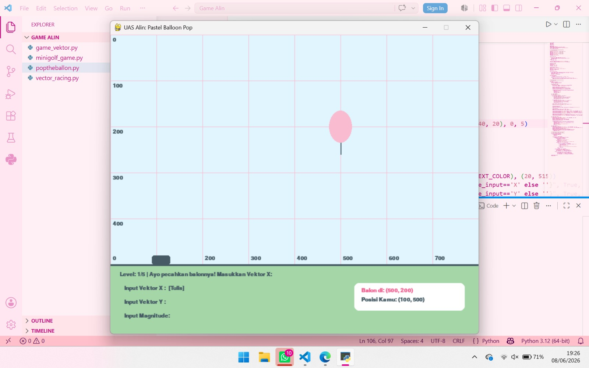

HELLO, THERE!
Selamat datang di portfolio kecil saya. Saya suka belajar hal baru, terutama yang berhubungan dengan teknologi dan website.
Kenalan Yuk!
ABOUT ME
Nama saya Salsabila Sujarwo dan biasa dipanggil Acha. Saya merupakan mahasiswa Fakultas Ilmu Komputer, jurusan Ilmu Komputer.
Saat ini saya sedang belajar tentang pemrograman, database, dan pengembangan website. Saya masih terus belajar dan mencoba hal-hal baru.
MY SKILLS
Membuat struktur dan halaman website.
Mengatur tampilan dan layout website.
Membuat website menjadi lebih interaktif.
Mengolah data dan database.
MY PROJECTS

01Dashboard aplikasi laundry yang menampilkan jumlah pesanan, pesanan yang sedang diproses, dan total pendapatan. Project ini dikerjakan bersama Daniel Audrey, Ezer Nicholas, Moza Apriza, dan saya sendiri Salsabila.
Python • Tkinter
02Pengolahan dataset menggunakan Python. Saya berperan pada bagian data cleansing untuk membersihkan dan menyiapkan data sebelum dianalisis. Project ini dikerjakan bersama Frans Eikel, Daniel Audrey, Aksa Prawira, Jesslyn Inggrid, Moza Apriza, dan Salsabila.
Python • Data Cleansing • Dataset
03Project game sederhana dengan konsep menembakkan jarum ke balon menggunakan perhitungan vektor. Project ini dikerjakan bersama Moza Apriza, Gabrielle Christin, Jesslyn Inggrid, dan Salsabila.
Python • Game • VektorSAY HI!
Kalau mau ngobrol atau sekadar menyapa, bisa lewat sini.